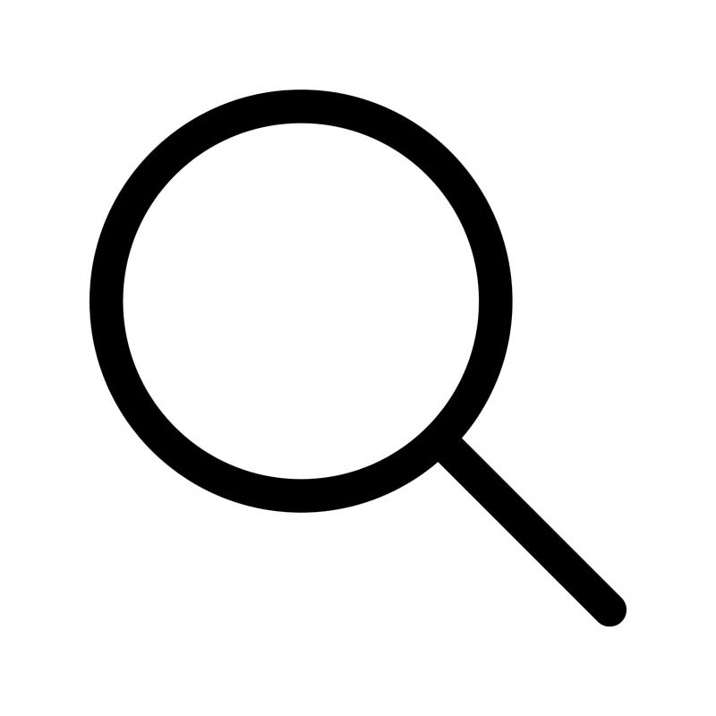
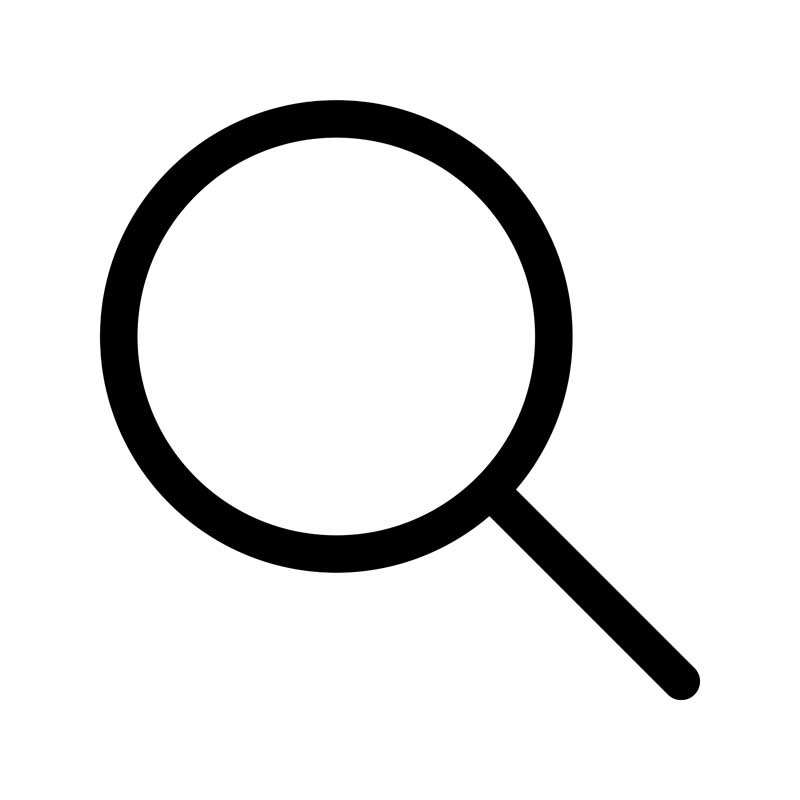
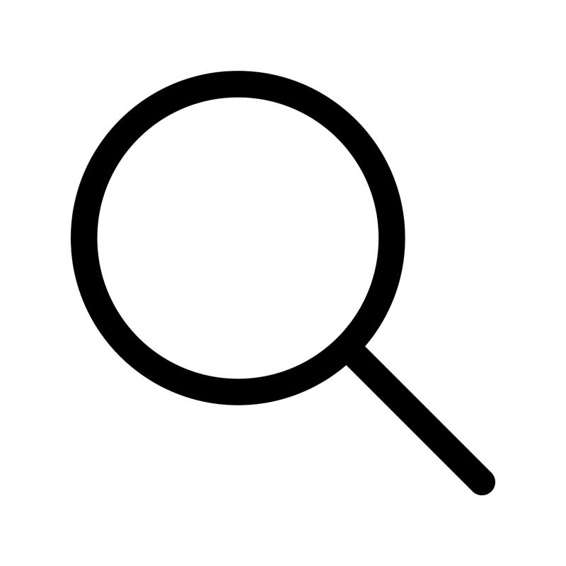

INFO@ BASIR-ABYEK.AC.IR تلفن:02832894858
 


INFO@ BASIR-ABYEK.AC.IR تلفن:02832894858

آخرین اخبار و رویداد های دانشگاه
آخرین اطلاعیه های دانشگاه
مشاوره کسب وکار، آموزش و مهارتهای تخصصی
موسسه آموزش عالی بصیر آبیک یک موسسه غیرانتفاعی
شهرآبیک ستان قزوین است. و در سال 1384 تاسیس شده است
در حال حاضر 1600 دانشجو و 140 استاد در این مرکز مشغول فعالیت می باشند
مقاله علمی
دانشجو
استاد
فعالیت

© کپی رایت - دانشگاه بصیر - powered by Enfold WordPress Theme